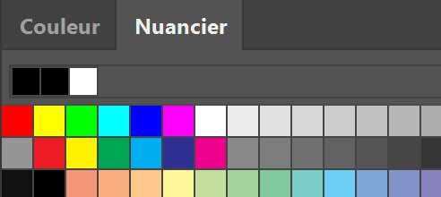
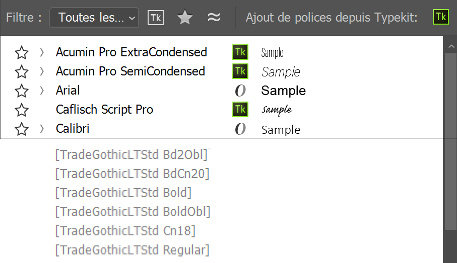
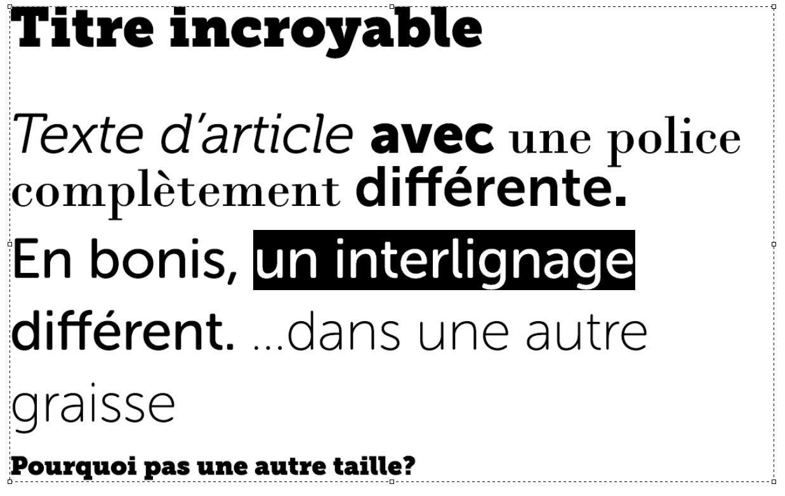

Ça sent la découpe
Je suis Michal Bluma.
Qui êtes-VOUS?
Veuillez lever la main si vous êtes :
Graphiste?
Développeur?
Une licorne?
découpe
nom féminin
Prendre des maquettes et les convertir en page/site web.
Je ne suis pas fâché.
Je veux simplement qu'on ait encore plus le goût d'aller prendre une bière ensemble.
Nous ne parlerons pas de :
Conception de maquettes dans le fureteur
Sketch (le logiciel)
Bibliothèques de ressources numériques comme celle d'Adobe
Avertissement :
Je ne suis pas omniscient.
Il y a une panoplie de façons de faire la découpe.
Les graphistes conçoivent.
Les développeurs analysent.
Première étape : cueillette d'information.
Plus l'information est facile à trouver,
mieux ça va aller.
La communication est l'outil le plus important dans votre arsenal.
Parlons-en!
Rêver en couleurs
Avant tout, le développeur va recueillir des informations.
Les couleurs, mesures et polices deviendront toutes des variables.
Les sélections remplissent mon cœur de chagrin.
Essayez d'éviter l'outil rectangulaire de sélection (Marquee).
Remplir des sélections de couleur est vraiment rapide.
... l'outil de Formes va super vite aussi!
Autre solution :
Le style de calque « Incrustation couleur »
N'utilisez jamais le remplissage pour les dégradés
Utilisez toujours une Forme ou une « Incrustation en dégradé »
Demandez-vous :
« Quelle sera la méthode la plus simple et efficace d'extraire les informations de couleur? »
Points bonis :
- Préparer une palette de couleurs (nuancier)
 - Énumérer les valeurs des couleurs utilisées dans une liste
Toutes ces couleurs seront des variables en fin de compte
$couleur-principale: rgb( 204, 0, 102 );
$couleur-liens: rgb( 102, 5, 51 );Fournissez les motifs séparément
Un motif prend quelques secondes à appliquer.
Un motif peut prendre vraiment longtemps à découper.
Bonjour la police
Ahh... Les fameuses « Polices manquantes »
Travailler avec les polices peut être facile si vous :
Faites une liste
Préparez un « paquet de police » (Font stack)
Ajoutez les polices dans un dossier
/ressources/*
Deux astuces pour
cataloguer les polices :
Astuce : Polices manquantes
- Ouvrez la fenêtre « Caractère »
- Toutes les polices seront à la fin entre crochets

Astuce : Cataloguer les polices utilisées
- Enregistrez le fichier en tant que PDF
(Enregistrer sous... -> « Photoshop PDF »). - Ouvrez le PDF dans Acrobat.
- Affichez les propriétés du document
(Fichier -> Propriétés). - Cliquez sur l'onglet "Polices" tab.
- Wünderbar! Un liste complète qui énumère toutes les polices utilisées dans le document.

Savoir-vivre des calques de texte
N'utilisez jamais plus d'une
police / plus d'un style / plus d'une taille par calque.
Évitez que le développeur doive partir à l'aventure avec l'outil Texte
Si même une des valeurs est [inconnue], ça va mal aller.
Les développeurs passent beaucoup de temps dans la fenêtre de « Caractère »
Essayez de rendre le séjour agréable. ;)
Répétez après moi :
« La page n'a pas de dimensions. »
* On ne parle pas d'imprimerie.
Le Web n'a pas de dimensions fixes.
On ne pourra jamais connaître l'étendue de notre canevas à l'avance.
« Je devrais préparer mes maquettes à quelle dimension? »
« Celle que vous croyez être la meilleure. »
Perdre la tête avec les entêtes
Les entêtes sont super!
Un bel entête!
Qu'arrive-t-il si la taille d'écran change?
On le laisse tel quel?
On retourne en 2006 et on fait un dégradé vers une couleur unie?
On ajuste la taille?
La communication est essentielle dans ces situations!
Ajoutez des notes dans votre PSD

( L'outil est avec la Pipette et la Règle )Ajoutez un groupe de calques avec toutes sortes de notes
Expliquez le tout dans un document envoyé avec votre PSD
S'il vous plaît,
évitez les « Modes de fusion »
(Blending Modes)
Les fureteurs ne sont tout simplement pas prêts
Soyons clair...
Les modes de fusion sur des calques exportés en une seule image (rectangle)...
Super cool!
Les modes de fusion sur des calques de référence pour le contenu dynamique / CSS
Pas cool, mec!
Livrables
(Gagnez)
Le gros lot!
N'envoyez pas que le PSD.
Préparez un lot.
- Créez un dossier
- Ajoutez un _notes.txt
- Ajoutez un dossier
/polices/ - Ajoutez un dossier
/motifs/ - Ajoutez un dossier
/ressources/
« 'sont où, tes astuces? »
PSDàCSSOMDMDRBBQ!
« Photoshop, sais-tu CSS'er? »
« Ben kin! »
En cliquant de la droite sur la plupart des calques, on peut « Copier (le) CSS»
Résultat :
.les-super-calques-sont-supers {
font-size: 48px;
font-family: "Museo";
color: rgb(160, 151, 144);
line-height: 1.333;
position: absolute;
left: 450.937px;
top: 338.146px;
z-index: 2;
}...pas le meilleur CSS au monde, disons.
Ça demeure une solution rapide et pratique pour extraire un peu de CSS
Le tour du chapeau de CSS Hat
de madebySource
Cliquez sur un calque et CSS Hat affiche les propriétés CSS immédiatement!

madebySource offrent aussi PSD Cleaner
*Excellent pour les graphistes!

Illustrator est de votre bord.
Est-ce que ceci vous dit quelque chose?
Le « Générateur »
à la rescousse!
Génial!
...vous en voulez plus?
Le « Générateur » peut :
- Exporter des PNGs, JPEGs, GIFs et SVGs
- Lire plusieurs options d'exportation par calque
- Vous épargner du temps
- Diminuer le syndrome de tunnel carpien
- Vous permettre de rencontrer votre âme sœur
* Je vous conseille de vous en tenir à Illustrator pour vos images vectorielles (SVG)
** La liste contient un mensonge.
Êtes vous prêt(e)s pour l'examen?
- Dressez une liste de polices utilisées
- Dressez une liste de couleurs
- Évitez les Modes de fusion (Blending modes)
- Préparez un lot
- Communiquez
- Communiquez
- Communiquez
- Mais, avant tout, ...
Soyez fins
Liens utiles
Épilogue
Michal Bluma
- https://isotrope.net
- @isotrope
- https://www.facebook.com/isotrope.net
- Motif utilisé : Subtle Patterns - « Feathered » par Martuchox
- The WP Crowd
- Polices utilisées : Playfair Display et Ubuntu
- Script de diapos : reveal.js
- Merci beaucoup, WordCamp Montréal!! <3